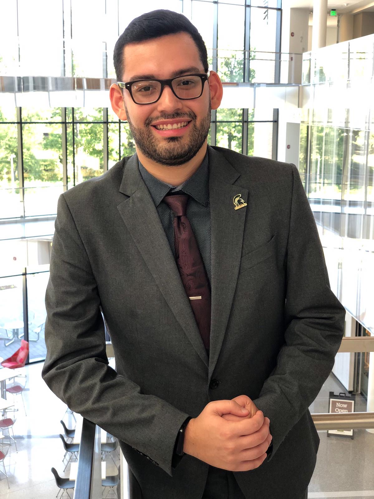
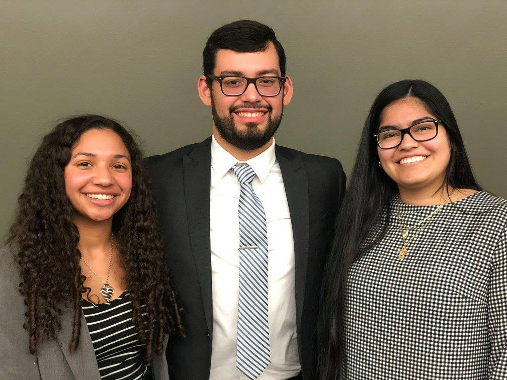
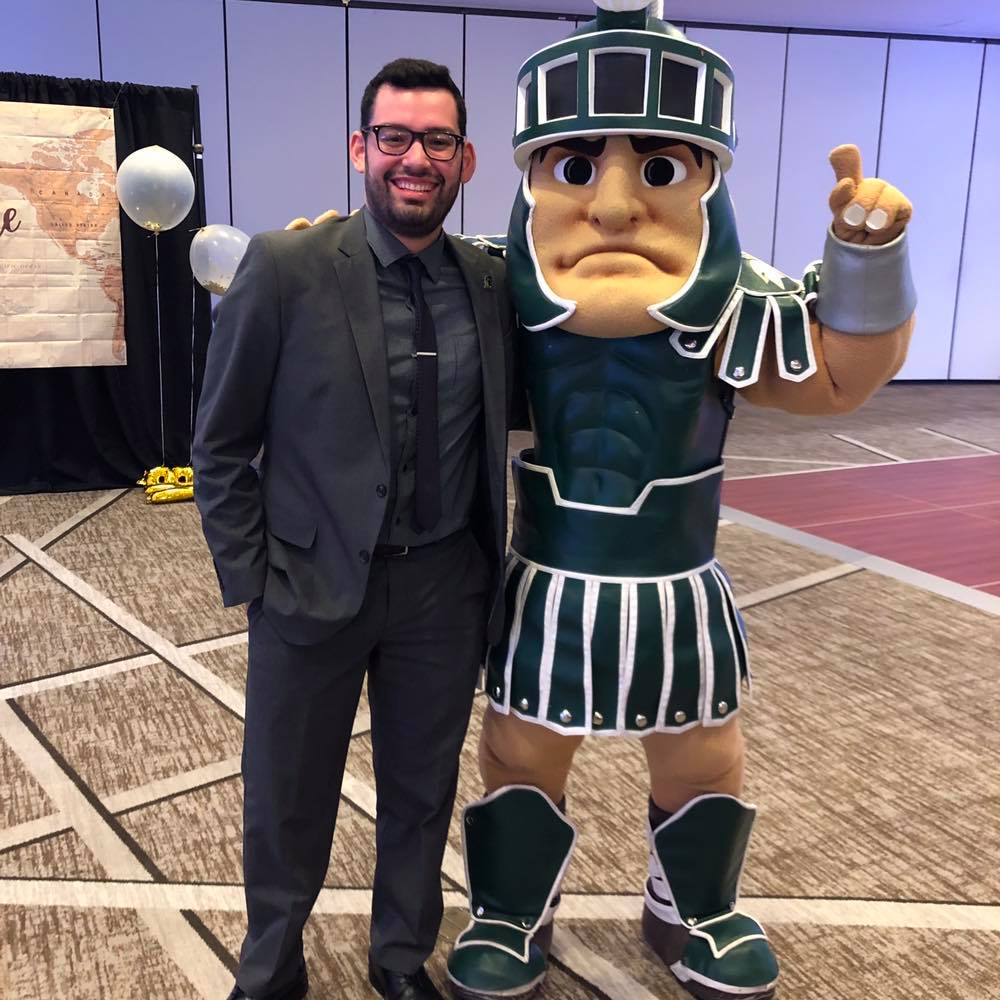
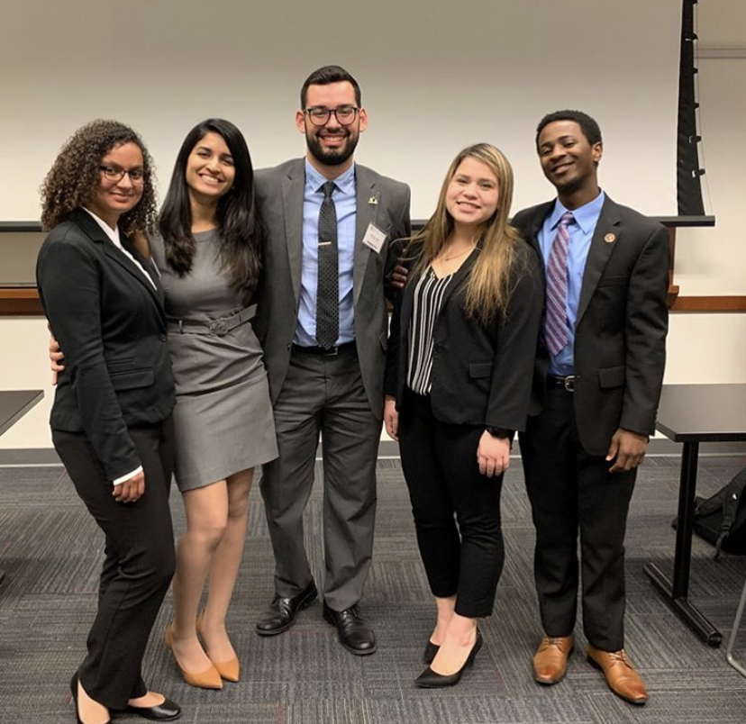

   
I am from Dexter, MI, a small city just outside of Ann Arbor. Currently, I am a senior at Michigan State University pursuing a Bachelor of Arts (BA) degree in Supply Chain Management with a minor in Information Technology (IT). Over my college career, I Have been very committed to student life and professional development on campus, specifically within the Eli Broad College of Business.
Finding my home away from home with the Multicultural Business Programs (MBP) at Michigan State, I became heavily involved with their organizations; specifically, the Native American and Hispanic Business Students (NAHBS). From this point, I started my first year as Secretary and moved my way up to serving as President my third year. Moreover, I have experience with a variety of business analytical/ programming software and have competed in numerous case competitions.
Continously searching to advance his career, I am seeking opportunities to work as a Business Analytics intern during Summer 2021 and am looking at the fields of Procurement, Strategy, Consulting, and Business Analytics for a full-time career.
Work Experience
- Procurement Intern | Altria Client Services................................................................................................................................................... June 2020 - Present
- Program Assistant | Fall Business Institute.................................................................................................................................................................... Sept. 2019
- Conference Assistant | Native American Business Institute.......................................................................................................................................... June 2019
- Conference Assistant | Fall Business Institute............................................................................................................................................................... Sept. 2018
Leadership Experience
- President, Native American and Hispanic Business Students (NAHBS)................................................................................................. April 2019 - April 2020
- Treasurer, Native American and Hispanic Business Students (NAHBS)................................................................................................. April 2018 - April 2019
- Membership Chair, Native American and Hispanic Business Students (NAHBS).................................................................................... Aug. 2018 - Jan. 2019
- Secretary, Native American and Hispanic Business Students (NAHBS)................................................................................................... Dec. 2017 - April 2018
- Participant, Summer Business Institute................................................................................................................................................................... Summer 2017
Case Competition Experience
- 2nd Place, KeyBank Leadership & Creativity Undergraduate Student Symposium Case Competition........................................................................ Nov. 2019
- 2nd Place, Native American and Hispanic Business Students Professional Development Dinner Case Competition............................................. Spring 2019
- 4th Place, Multicultural Heroes Hall of Fame Case Competition............................................................................................................................... Spring 2018
- 1st Place, Target Campus Grants Case Competition......................................................................................................................................................... Fall 2017
Business Analytical/Programming Software Experience
- Arena Simulation
- Cascading Style Sheets (CSS)
- Google Analytics
- Hypertext Markup Language (HTML)
- Microsoft Access
- Microsoft Excel
- Python
- R Studio
- Tableau
- Virtual Studio Code
Michigan State University | Campus Involvement
Please Feel Free To Reach Out If You Would Like!


© 2020 created by Gerardo Lucena.